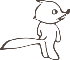
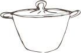
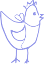

Studio d'édition & de récits — Maud Lenoir
Des imprimés et des histoires qui se partagent à table.
Livres, menus, expositions, guides, faire-part : je fabrique les objets imprimés qui font passer un récit.
Vos histoires, mises en page
POUR LES STRUCTURES
Un projet à porter devant du public
Un ouvrage à publier, une exposition à raconter, une saison à annoncer, un atelier à monter. Je prends le récit en amont et je vais jusqu'aux fichiers prêts à imprimer.
- ·Livres, albums, collections, couvertures
- ·Livrets et panneaux d'exposition, signalétique
- ·Identité, affiches, programmes, guides
- ·Ateliers lecture-cuisine et séances de jeu
Ce que ça donne, en détail →
POUR LES PARTICULIERS
Une occasion qui mérite du papier
Un mariage, une naissance, un grand repas, les recettes de votre famille à réunir avant qu'elles se perdent. On dessine ça ensemble, en petite série.
- ·Faire-part, invitations, menus, marque-places
- ·Le livre de recettes de la famille
- ·Un souvenir imprimé, en dix exemplaires ou en cent
- ·Un atelier chez vous, autour de la table
Racontez-moi l'occasion →
« Que reste-t-il des histoires que l'on se racontait ? »
Le point de départ de Mythes & Marmites
Sur la table cette semaine
Trois plats, trois histoires
Tout lire →
Un livre, une identité, un atelier ?
Racontez-moi le projet — même en trois lignes, même s'il est encore flou.
Parler d'un projet
À table · deux fois par mois
Une recette, et l'histoire qui va avec.
On cuisine d'abord — le récit se lit en marge, pendant que ça mijote.
Le jeu · Mythes & Marmites
Une marmite, des cartes, et toute une tablée.
Un jeu de récit coopératif : on cuisine des histoires autant qu'on les raconte. Aujourd'hui prototype, joué en famille comme en salle.
Prototype — pas encore en vente. Je cherche un éditeur et des tables pour le tester.
6+
à partir de 6 ans, en famille
2–6
joueurs autour de la table
45 min
une partie, le temps d'un repas
48
cartes-contes dessinées à la main
Dans la boîte
48 cartes-contes
Un héros par carte, du conte populaire au mythe — et une amorce de recette.
Le panier
On y mijote les histoires, on y dépose les ingrédients du récit.

Le carnet de recettes-récits
Pour garder une trace des histoires inventées et les rapporter chez soi.
Le tour de jeu
- On tire une carte.
- On pose sa question à la tablée.
- Chacun ajoute un ingrédient : un souvenir, un goût, une suite.
- On mijote l'histoire ensemble…
- …et on la note pour la rapporter.
Pourquoi ce jeu existe
Le constat
Les écrans captent l'attention des plus jeunes, et les histoires que l'on se transmettait à table s'effacent. Le repas, lui, reste l'un des derniers moments où l'on se retrouve vraiment.
Le pari
Mêler contes, mythes et cuisine pour redonner aux familles l'envie — et les mots — de se raconter, d'une génération à l'autre.
Ce que ça change
Des moments de partage retrouvés, un lien intergénérationnel ravivé, et un rapport plus joyeux et plus conscient à l'alimentation.
Une partie en cours — mains, cartes, plateau
Les cartes-contes étalées
Détail du plateau-marmite
Le carnet ouvert, écrit à la main
Faites glisser pour voir la suite
Où en est le jeu
Il se construit avec celles et ceux qui le testent.
Fait
48 cartes dessinées, règles écrites, prototype imprimé et joué en famille.
En cours
Séances de test devant du public, réglages du tour de jeu, carnet de recettes.
Cherche
Un éditeur jeunesse, et des lieux prêts à accueillir une partie.